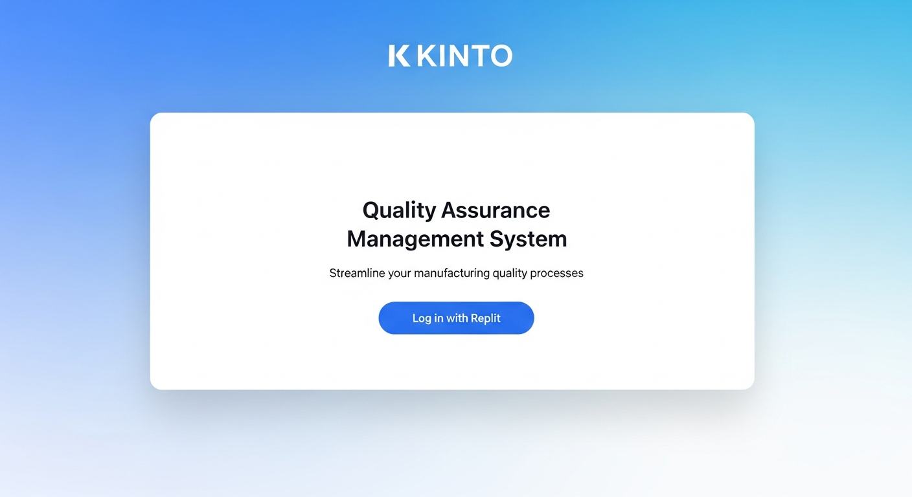
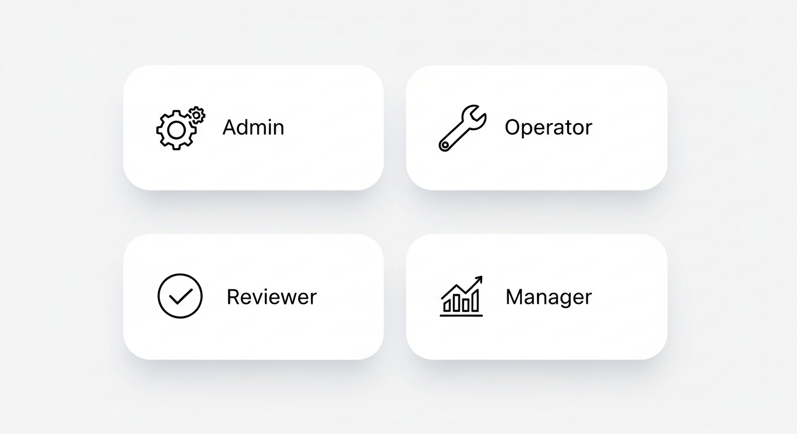
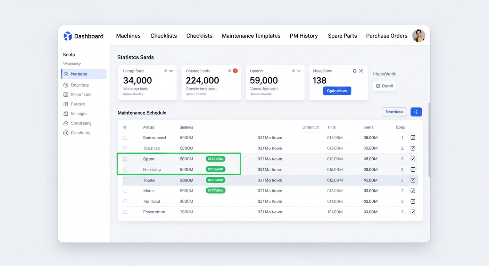
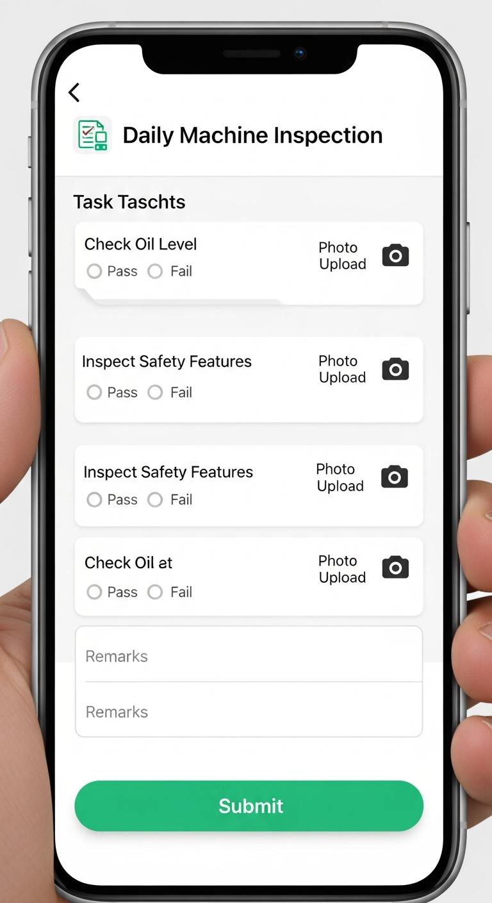
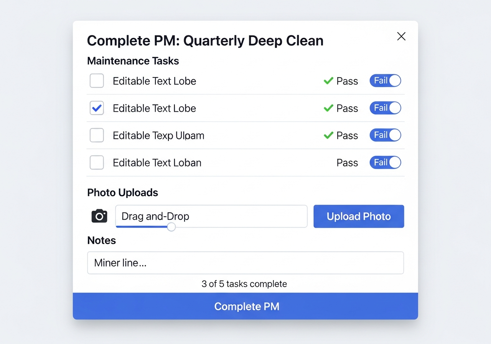
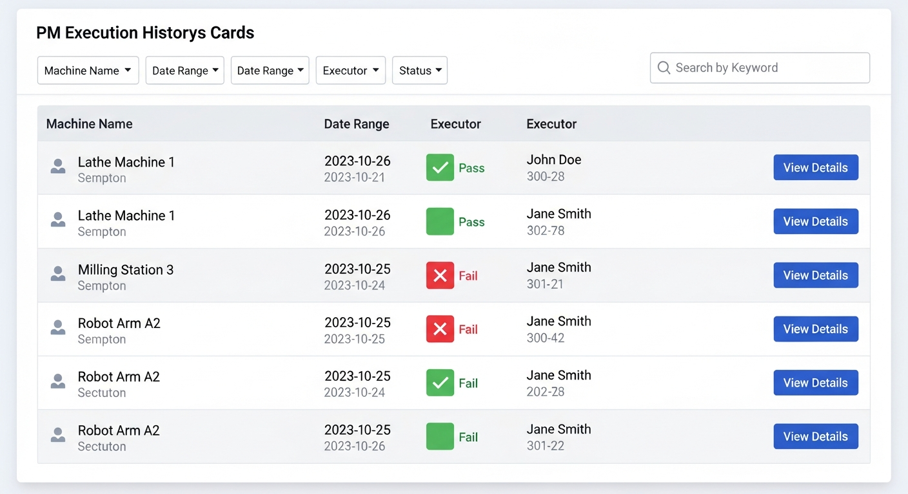

KINTO Manufacturing QA Management System - User Manual
Getting Started
Accessing the Application
- Navigate to your application URL in a web browser (works on desktop and mobile)
- Click "Log in with Replit" on the landing page
- After authentication, you'll see the Role Selector screen
- Choose your role: Admin, Operator, Reviewer, or Manager
Landing Page:

Role Selector:

Admin Role
The Admin role has access to all system features including configuration, user management, and reporting.
Dashboard Overview
After selecting "Admin" role, you'll see 8 main tabs:
- Dashboard - Overview statistics
- Machines - Machine configuration
- Checklists - Quality checklist templates
- Maintenance - PM scheduling
- PM Templates - Reusable PM task lists
- PM History - Completed PM records
- Spare Parts - Inventory management
- Purchase Orders - PO generation
Admin Dashboard:

Operator Role
Operators perform daily quality checks, complete checklists, and execute preventive maintenance.
Use Case: Completing a Daily Quality Checklist
Objective: Perform and document daily machine inspection
Steps:
- From Operator Dashboard, click on an assigned machine card
- The active checklist loads with all tasks
- For each task:
- Read the task name and verification criteria
- Perform the inspection
- Select Pass or Fail radio button
- If photo required, take photo of the verification point
- Add optional notes in the remarks field
- Complete all tasks in the checklist
- Add optional "General Notes" at bottom
- Click "Submit Checklist"
Mobile Checklist Form:

Use Case: Completing Preventive Maintenance
Objective: Execute scheduled PM with task list template
Steps:
- From Operator Dashboard, scroll to "Scheduled Maintenance" section
- Find the upcoming or overdue PM task
- Click "Complete PM" button
- PM Execution Dialog opens with template tasks
- Work through each task:
- Read task description and verification criteria
- Perform the maintenance step
- Select Pass or Fail status
- Upload photo if required
- Add notes about the task
- Add "General Notes" for overall execution
- Click "Complete PM" button
PM Execution Dialog:

PM History Review (Admin)
Use Case: Reviewing PM Execution History
Objective: Audit completed preventive maintenance records
Steps:
- Click the "PM History" tab
- Browse completed PM executions (most recent first)
- Each card shows:
- Machine name
- Template used (if any)
- Completion date
- Executor name
- Pass/Fail summary
- Click "View Details" on any execution
- Review detailed task results with photos and notes
- Click "Close" to return to list
PM History View:

Use for:
- Compliance audits
- Identifying recurring issues
- Performance tracking
- Training documentation
Common Features
Photo Upload (Mobile-Optimized)
Mobile Camera Access:
- When photo required, tap file input
- Mobile devices show option: "Take Photo" or "Choose from Gallery"
- Select "Take Photo" to open camera
- Capture clear, well-lit image
- Photo preview appears immediately
Best Practices:
- Ensure good lighting
- Focus on relevant detail
- Include context (wider shot if helpful)
- Photos stored as base64 (works offline)
System Version: 1.0.0
Last Updated: November 2025
Platform: Web-based (iOS/Android compatible)